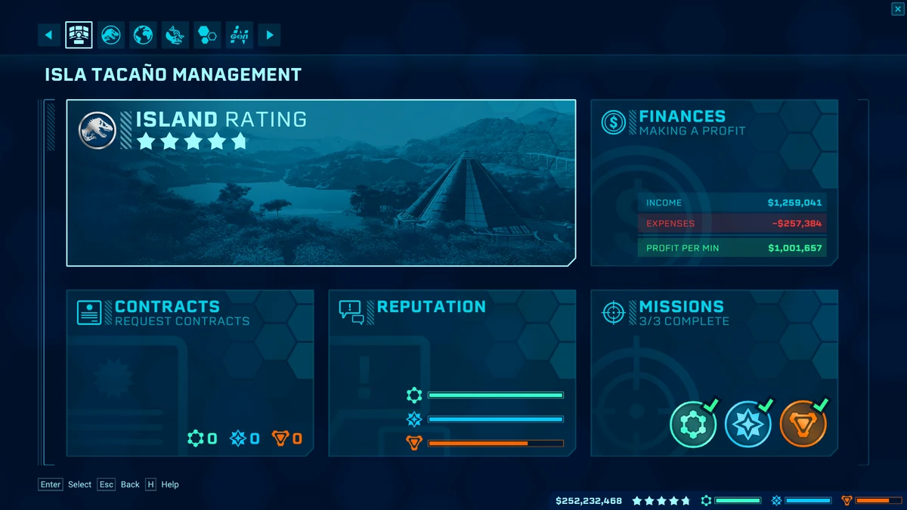
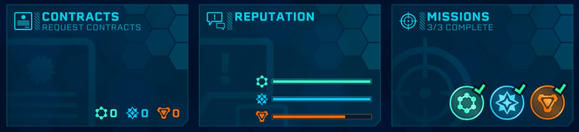

How To Play
How To Play

How to keep a park going
Finances
 Probably the most important thing to keep your park going is making a profit.
Probably the most important thing to keep your park going is making a profit.
You can make money by selling tickets
and by building stores, like gift shops or restaurants.
To sell tickets you have to have dinosaurs in your park
and you have to build stores to keep guests happy. The more dinosaurs you have, the more guest come to your park, the more money you make.

Divisions
 cropped.jpg) When you're making enough profit to no longer
When you're making enough profit to no longer
having to worry about going bankrupt
you can focus on doing contracts.
When you do contracts you get a reward afterwards
but that reward is most of the time less then the money
you have to spent to complete the contract.
The main point of the contract is to get your reputation with the different divisions up.
When you complete a contract for a division, that divisions rating goes up,
but the reputation for the other divisions goes down.
If you have a high enough reputation you get a reward from the divisions.
Almost all the rewards on the island are in the reputation bars
(besides the rewards you get with your island rating but I'll get to that later).